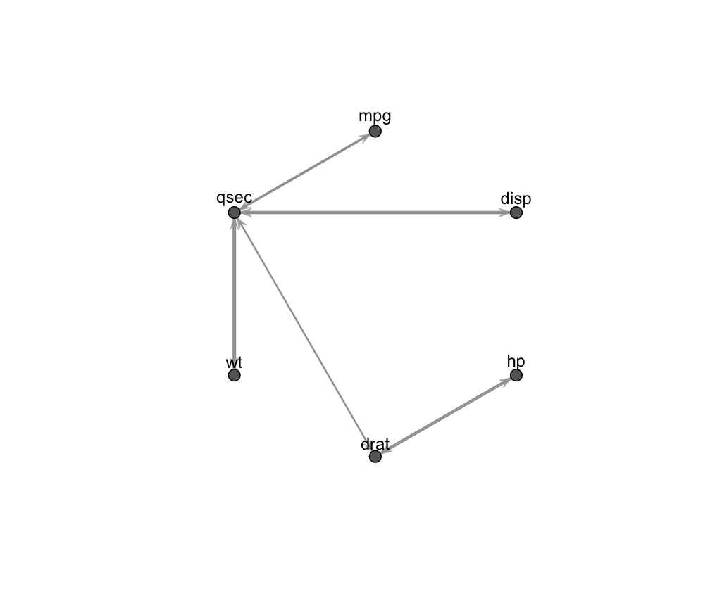
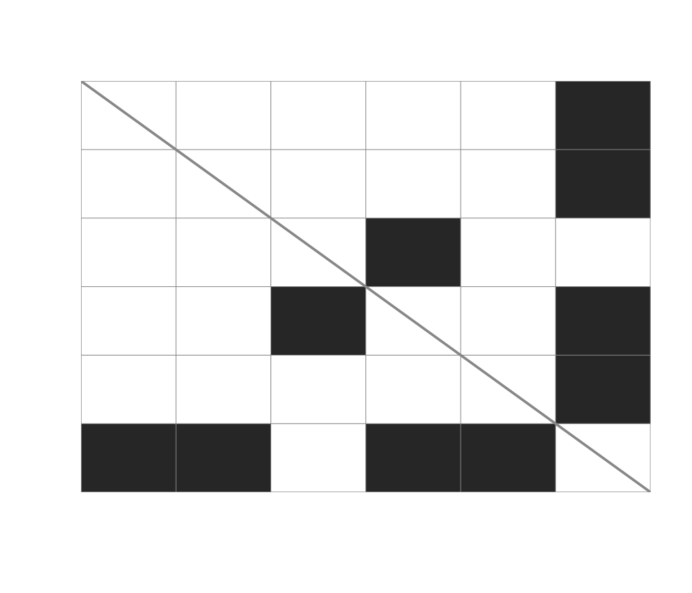
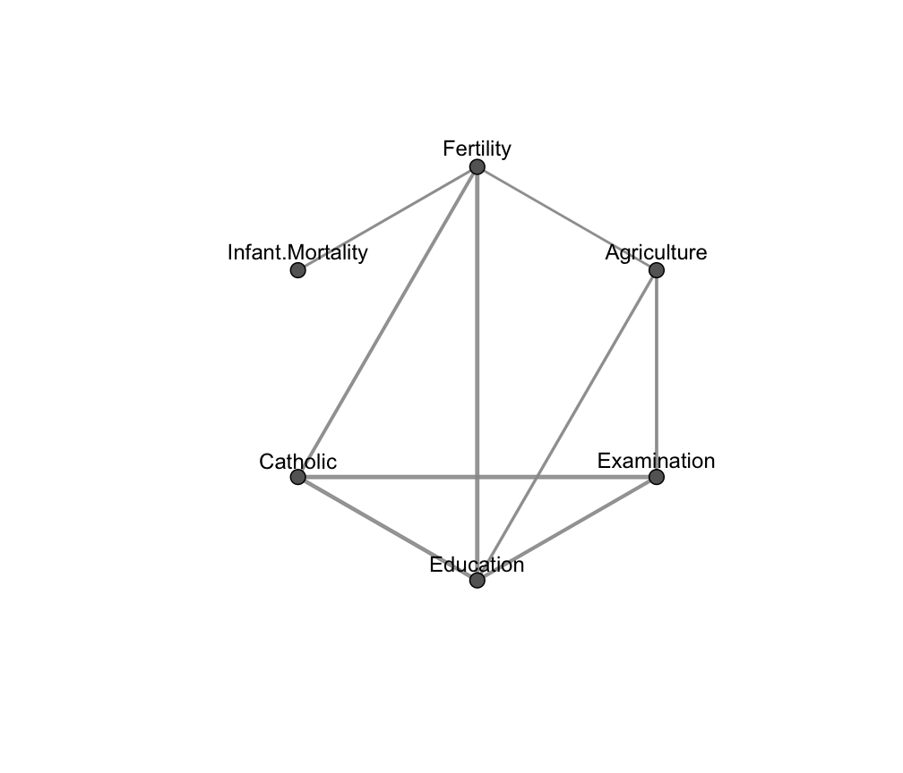
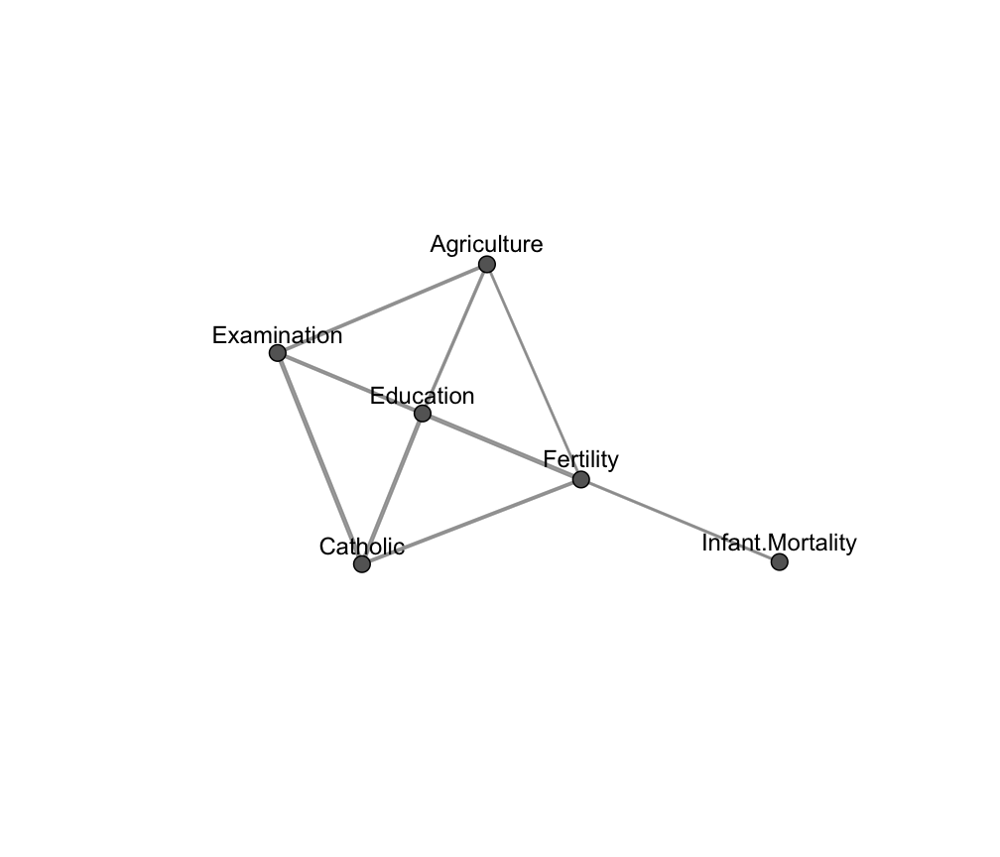
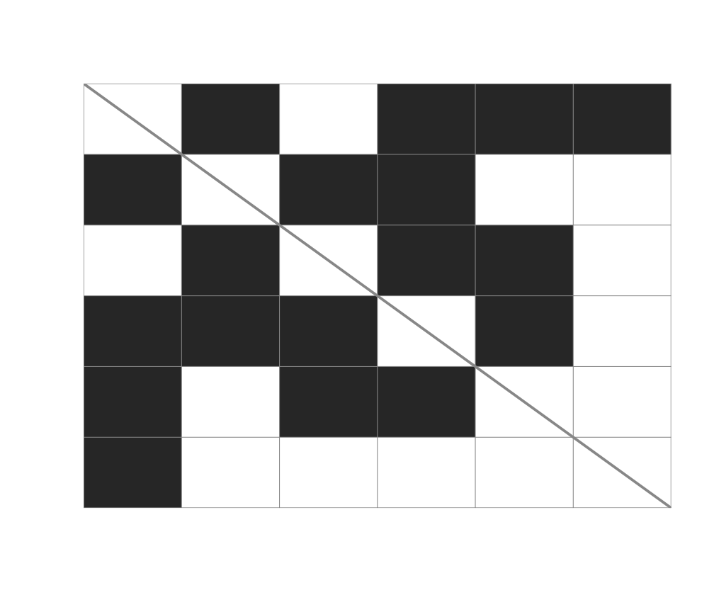

plotting-functionalities.RdPlotting functionalities for objects of class fitGGM or mixGGM.
# S3 method for fitGGM plot(x, what = c("graph", "adjacency"), layout = c("circle", "random"), ...) # S3 method for mixGGM plot(x, what = c("graph", "classification", "adjacency", "common"), layout = c("circle", "random"), colors = NULL, symb = NULL, dimens = NULL, ...)
| x | An object of class |
|---|---|
| what | The type of plot to be produced. If |
| layout | Layout of the graph, either circular (default) or random. |
| colors | A vector of user defined colors |
| symb | A vector of user defined symbols |
| dimens | A vector giving the integer dimensions of the desired variables for multivariate data in case of |
| ... | Other arguments. |
These functions are used to visualize graph association structures and clustering results for single and mixtures of Gaussian covariance and concentration models.
In the case of what = "graph", the graph of a Gaussian covariance graph model is bi-directed, while the graph of a Gaussian concentration model is un-directed. Thickness of the edges is proportional to the estimated association parameters.
See "Examples" for various cases.
# covariance graph data(mtcars) x <- mtcars[,c(1,3:7)] R <- cor(x) graph <- ( abs(R) < 0.5 )*1 diag(graph) <- 0 fit1 <- fitGGM(data = x, graph = graph) plot(fit1)# concentration graph data(swiss) V <- ncol(swiss) graph <- matrix( c(0,1,0,1,1,1, 1,0,1,1,0,0, 0,1,0,1,1,0, 1,1,1,0,1,0, 1,0,1,1,0,0, 1,0,0,0,0,0), V,V, byrow = TRUE ) fit2 <- fitGGM(swiss, graph = graph, model = "concentration") plot(fit2)# NOT RUN { # mixture of Gaussian concentration graph models data(banknote, package = "mclust") mod3 <- mixGGM(banknote[,-1], model = "concentration", K = 2) plot(mod3, what = "graph") plot(mod3, what = "adjacency") plot(mod3, what = "classification") plot(mod3, what = "classification", dimens = c(1,4,5)) plot(mod3, what = "common") # mixture of Gaussian covariance graph models data(wine, package = "gclus") mod4 <- mixGGM(wine[,-1], model = "covariance", K = 3) clb <- c("#999999", "#E69F00", "#56B4E9") # colorblind friendly palette plot(mod4, what = "graph", colors = clb) plot(mod4, what = "adjacency", colors = clb) plot(mod4, what = "classification", colors = clb, dimens = c(1,7,8,12)) plot(mod4, what = "common") # }